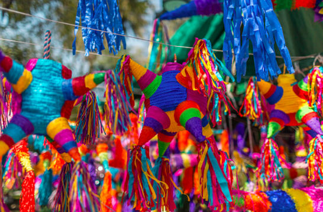

Although piñatas are uniquely thought of as a fun activity for parties nowadays, they have a long, rich history.[1] There is some debate but it appears that their origin is not Spanish but Chinese.[2] The Chinese version was in the shape of a cow or ox and used for the New Year. It was decorated with symbols and colors meant to produce a favorable climate for the coming growing season. It was filled with five types of seeds and then hit with sticks of various colors. After the piñata was broken, the remains were burned and the ashes kept for good luck.[1][3][4]
The tradition arrived in Europe in the 14th century where it was associated with the Christian celebration of Lent; in Spain, the first Sunday of Lent, "Piñata Sunday", became a celebration known as the Dance of the Piñata. As the word's Italian origin indicates, pignatta meaning "earthenware cooking pot", the Spanish initially used a plain clay container, before starting to decorate it with ribbons, tinsel and colored paper. The origin of the Italian word is thought to be linked to the Latin word pinea, "pine cone"
Piñatas were traditionally made with a clay pot base and many artisans make a living selling just the pot for people to decorate as they wish. However, clay pot piñatas have mostly been replaced by those made with cardboard and paper mache, usually fashioned over balloons.
The piñata is most strongly identified with Mexico.[9] The art of making modern piñatas falls under the Mexican craft heading of "cartonería", which refers to the making of items from paper and cardboard. This puts piñatas in the same category as amate paper craft, Judas figures and Mexico City style alebrijes.
One niche market for piñatas in Mexico is of those themed for adults. These include political figures, especially those who are not particularly liked. Piñatas are similarly popular in a number of other Latin American countries as well
